We sincerely thank
the editor and all reviewers for their valuable feedback that we have used to
improve the quality of our manuscript. To provide readers with a clearer
understanding of the experimental procedures and to serve as a reference for
reproducing the experiments, we have compiled the following code and visual
materials:
(1)
Code link: (https://github.com/tianzhiya/FDAFusion)
(2) We have recorded a video demonstrating
the experimental results on the MSRS dataset to help readers visually
understand the experimental steps. Video link: https://drive.google.com/file/d/1Ag-xxkiy96m3Xo9W1g2L8cr2Zw0Efylj/view?usp=sharing
(3) We have also recorded a video of the
ablation experiments, showing two scenarios: when FSMM is added alone, the
performance of the baseline model decreases; when FSMM is added to a model that
includes DFFM, performance improves. Video link: https://drive.google.com/file/d/1fVO457GUx2L920zKM9s_-iUj82aRfC9A/view?usp=sharing
Responses to Reviewer 5’s Comment
Comments & Responses
Comment
5.1:
1. The
novelty of the method is not yet sufficiently established. FAMM uses
conventional Fourier magnitude-phase decomposition and convolutional
modulation, while DFFM combines a Swin Transformer branch, a convolutional
residual branch, and mask-based weighting. FSMM currently appears closer to a
fixed-threshold handcrafted frequency energy rule than a learned region-aware
mechanism. The authors should clarify the substantive differences from existing
magnitude-phase modulation, frequency-attention, and dual-branch fusion
methods, and add direct comparisons with closely related frequency-domain
approaches such as FreqGAN, FSATFusion,
and DSWFusion. Controlled comparisons with spatial
attention, a learnable spatial mask, and the proposed frequency mask under
matched parameter counts and training settings are also necessary.
Response
5.1：
We feel great
thanks for your professional review work on our article. We have further
clarified in the revised manuscript how our method differs from existing work.
Our method does not rely solely on the Fourier transform or simply construct a
two-branch structure; rather, it combines amplitude and phase modulation,
frequency-domain saliency priors, and dual-path feature fusion. Specifically,
FSMM generates a regional saliency prior based on local frequency responses,
and DFFM then utilizes this prior to selectively fuse global structural
information with local detail features.
In terms of method
comparisons, we have already included a comparison with FSATFusion
in the first round of revisions. In this round, we have added experimental
comparisons and related analyses with FreqGAN. We
also attempted to obtain the source code from the DSWFusion
GitHub repository (https://github.com/XAUTjl/DSWFusion), but
have not yet succeeded; therefore, we are unable to reproduce DSWFusion method under uniform settings for quantitative
comparison. It was not been included in the experimental comparisons in this
round of revisions.
Additionally, we
have added a controlled comparison between spatial attention masks, learnable
spatial masks, and the frequency-domain saliency masks proposed in this paper.
All approaches employ the same fusion backbone, training parameters, mask
application locations, and feature fusion methods. The specific modifications
are as follows:
(1)
A comparative analysis of our method with FSATFusion and FreqGAN
a.
Comparative Analysis Using the MSRS
Dataset
|
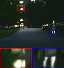 |
|
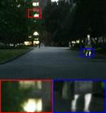 |
|
(a) FreqGAN |
(b) FSATFusion |
(c) Ours |
Figure 1: Qualitative comparison of our method
with FreqGAN and FSATFusion
on the MSRS test set
Table
1: Quantitative Comparison of Our Method with FreqGAN
and FSATFusion on the MSRS Test Set
|
|
SD |
VIF |
AG |
EN |
Qabf |
SF |
|
FreqGAN |
40.6524 |
0.6954 |
3.0356 |
6.0968 |
0.5405 |
9.4681 |
|
FSATFusion |
40.3882 |
1.002 |
3.6182 |
6.5769 |
0.6875 |
11.3423 |
|
Ours |
42.8031 |
1.0892 |
3.7297 |
6.6788 |
0.7235 |
11.3675 |
Figure 1 and Table
1 present the qualitative and quantitative comparison results between our
method and FreqGAN and FSATFusion
on the MSRS test set, respectively. In Figure 1, all three methods demonstrate
good visual quality. In Table 1, our method achieves the best results across
all evaluation metrics, indicating that it exhibits superior fusion performance
on this dataset.
b.
Comparative Analysis on the M3FD Test Set
|
|
|
|
|
(a) FreqGAN |
(b) FSATFusion |
(c) Ours |
Figure 2: Qualitative comparison of our
method with FreqGAN and FSATFusion
on the M3FD test set
Table 2: Quantitative Comparison of Our
Method with FreqGAN and FSATFusion
on the M3FD Test Set
|
|
SD |
VIF |
AG |
EN |
Qabf |
SF |
|
FreqGAN |
38.1315 |
0.6573 |
4.2011 |
6.9462 |
0.5528 |
12.1265 |
|
FSATFusion |
31.9733 |
0.7657 |
3.7611 |
6.6451 |
0.5466 |
11.6789 |
|
Ours |
37.3332 |
0.9458 |
4.8298 |
6.889 |
0.691 |
14.3785 |
As shown in Figure
2, three methods preserve the overall structure of roads, vehicles, and
buildings, while our method provides a clearer representation of road sign text
and pedestrian outlines in the zoomed-in regions, and the background structure
is also more complete. The quantitative results in Table 2 show that our method
achieves the best results on the four metrics―VIF, AG, Qabf,
and SF―and outperforms FSATFusion on all six metrics;
however, its SD and EN scores are slightly lower than those of FreqGAN. Overall, our method demonstrates good
comprehensive performance in terms of information retention and detail
rendering.
c.
Comparative Analysis on the MFNet Test Set
|
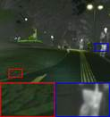 |
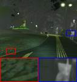 |
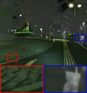 |
|
(a) FreqGAN |
(b) FSATFusion |
(c) Ours |
Figure 3: Qualitative comparison of our
method with FreqGAN and FSATFusion
on the MFNet test set
Table 3: Quantitative Comparison of Our
Method with FreqGAN and FSATFusion
on the MFNet Test Set
|
|
SD |
VIF |
AG |
EN |
Qabf |
SF |
|
FreqGAN |
35.8804 |
0.9173 |
3.2637 |
6.6268 |
0.5491 |
9.7007 |
|
FSATFusion |
31.3754 |
0.9047 |
3.0025 |
6.1895 |
0.588 |
10.1241 |
|
Ours |
37.3608 |
1.027 |
3.7625 |
6.6057 |
0.7141 |
11.6531 |
As shown in Figure
3, all three methods preserve the overall structure of the nighttime road and
surrounding scenes; our method provides a clearer representation of road
surface textures and road edges in the locally magnified regions. Table 3 shows
that our method achieves the highest values on five metrics―SD, VIF, AG, Qabf, and SF―while its EN score is slightly lower than that
of FreqGAN but higher than that of FSATFusion. Our method outperforms FSATFusion
on all six metrics. Overall, our method achieved good comprehensive fusion
results on the MFNet test set.
d.
Comparison of Object Detection Performance
on M3FD
|
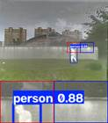 |
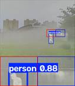 |
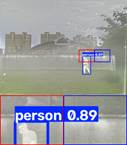 |
|
(a) FreqGAN |
(b) FSATFusion |
(c) Ours |
Figure 4: Qualitative comparison of our
method with FreqGAN and FSATFusion
on the M3FD object detection test set
Table 4: Quantitative comparison of our
method with FreqGAN and FSATFusion
on the M3FD object detection test set.
|
|
AP@0.5 |
|
mAP@[0.5:0.95] |
||||||||||
|
|
Person |
Car |
Motorcycle |
Bus |
Truck |
Traffic
light |
|
Person |
Car |
Motorcycle |
Bus |
Truck |
Traffic
light |
|
FreqGAN |
0.457 |
0.691 |
0.2058 |
0.4516 |
0.1403 |
0.2196 |
|
0.3489 |
0.5422 |
0.144 |
0.3706 |
0.1185 |
0.1287 |
|
FSATFusion |
0 .4655 |
0.6686 |
0.1597 |
0.3417 |
0.1461 |
0.1616 |
|
0.3494 |
0.5183 |
0.1213 |
0.2759 |
0.1291 |
0.1068 |
|
Ours |
0.5143 |
0.7286 |
0.2688 |
0.559 |
0.1713 |
0.3195 |
|
0.3761 |
0.5803 |
0.1646 |
0.5075 |
0.1585 |
0.1935 |
On the M3FD
dataset, we selected the same 288 test scenes and evaluated the fusion images
generated by different methods by feeding them into the official YOLOv5
pre-trained model. The detector was not retrained or fine-tuned. Table 4 lists
the AP@0.5, and AP@[0.5:0.95] for each of the six
object classes. The latter metric calculates AP by incrementing the IoU threshold from 0.50 to 0.95 in 0.05 increments, then
taking the average of the resulting AP values.
As shown in Figure
4, all three methods detected pedestrians; the detection confidence of our
method was 0.89, slightly higher than the 0.88 achieved by FreqGAN
and FSATFusion. Table 4 shows that our method
outperformed the other two methods in terms of AP@0.5 and AP@[0.5:0.95]
across all six categories.
(2)
Controlled Comparison and Analysis of
Different Masking Strategies
To
investigate the impact of different masking generation methods on fusion
performance, we compared five strategies―Constant Mask (CM), Random Mask (RM),
Spatial Attention Mask (SAM), Learnable Spatial Mask (LSM), and the
frequency-domain saliency mask (M). In our experiments, we varied only the mask
generation strategy, while keeping the rest of the network architecture,
feature fusion process, and training settings consistent. This approach
minimized the influence of other factors to ensure a fair comparison of how
different masking mechanisms affect the fusion results.
The
Constant Mask (CM) is a single-channel weight map with the same spatial
dimensions as the input, where all weights at every position are set to 0.5.
The Random Mask (RM) independently samples at each spatial position to generate
a single-channel weight map with values in the range [0,1].
Spatial
Attention Masking (SAM) first concatenates visible-light and infrared features,
then computes the mean and maximum maps of each channel, and finally generates
a weight map through a 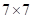
The
Learnable Spatial Mask (LSM) also relies on the concatenated visible-light and
infrared inputs, but instead of calculating channel averages or maxima, it
directly extracts spatial responses through a convolutional layer and then applies a
sigmoid function to obtain per-pixel weights.
Table 5: Results from three independent
experiments using five masking strategies on the MSRS dataset (mean
±standard deviation)
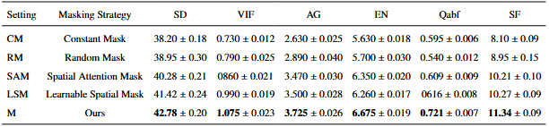
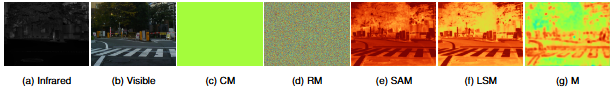
Figure 5:
Visual analysis of the frequency-domain saliency mask and the fusion process in
Scene #01574D
The
visualization results in Figure 5 show that the constant mask assigns the same
weight to all locations, while the random mask lacks distinct regional
structure. The spatial attention mask and the learnable spatial mask produce
spatial variations; in contrast, our frequency-domain saliency mask exhibits
clearer regional differences and can provide guidance for the dual-path fusion
of DFFM based on local frequency responses.
Table
5 reports the mean values and standard deviations for the five strategies
across three independent experiments on the MSRS dataset. Our method achieved
the highest average values across all six metrics: SD, VIF, AG, EN, Qabf, and SF. Based on a comprehensive analysis of both
qualitative and quantitative results, our frequency-domain saliency mask
achieved superior fusion performance under the experimental conditions
described here.
We
have added, as detailed in page 18-22 and page 19-30\ EXPERIMENTS.
Comment
5.2:
2.Important
implementation details required for reproducibility are missing. The manuscript
should report the optimizer, initial learning rate and schedule, number of
epochs, batch size, random seeds, data augmentation, loss weights,
phase-perturbation coefficient, and local-statistics window size. The exact
training, validation, and test splits for MSRS, M3FD, and MFNet should also be specified. In addition,
the authors should state whether each baseline uses official pretrained weights
or is retrained, whether input resolution and color space are unified, and
whether colorizing grayscale outputs with the visible-image Cr/Cb channels affects the fairness of the comparison.
Response5.2:
Thank you for
pointing out this problem in manuscript. We have added information on training
parameters, preprocessing methods, and dataset splitting in the revised
manuscript. FDAFusion uses the Adam optimizer with an
initial learning rate of ( 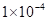 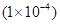 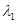 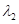 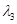
The model was
trained on 1,083 image pairs from the MSRS dataset and evaluated on 361 test
image pairs from the same dataset; M3FD and MFNet
were evaluated on 300 and 393 publicly available test image pairs,
respectively, none of which were used in model training. No separate validation
set was defined in this paper. For the M3FD object detection experiments, 288
scene pairs were selected from its test set for evaluation.
We
have added, as detailed in page 18\ EXPERIMENTS.
Comment
5.3:
3.The
current ablation study does not adequately isolate the independent contribution
of each component. In Table 5, configuration A3 with FSMM alone performs worse
than the baseline on all six metrics, whereas most of the improvement appears
to come from DFFM. Architecture changes and their dedicated losses are also
introduced together, making it difficult to determine the source of the gain.
The authors should add experiments that insert or remove FSMM while keeping
FAMM+DFFM fixed, compare constant, random, spatial-saliency, and
frequency-domain masks, and include cross ablations in which modules are
retained without their dedicated losses and losses are varied under a fixed
architecture. Key
experiments should be repeated at least three times with means and standard
deviations. The threshold study should also report quantitative curves for all
six metrics rather than only mask visualizations from one image.
Response5.3:
We gratefully
appreciate for your valuable suggestion comment. DFFM is the core module appresponsible for feature fusion and content
reconstruction in this paper; therefore, it is reasonable that it has a
significant impact on the final fusion performance. In Table 5, all metrics
declined after FSMM was added to the baseline model. We believe this may be
because DFFM can utilize masks to select and fuse features from different
paths, whereas the baseline―composed solely of convolutional modules―lacks a
corresponding feature selection mechanism, and directly introducing a mask may
actually interfere with feature fusion. We have provided a video demonstrating
the experimental process, which can be downloaded at https://drive.google.com/file/d/1fVO457GUx2L920zKM9s_-iUj82aRfC9A/view?usp=sharing.
In the revised
draft, configurations A6 and A10 serve as ablation controls for FSMM: both
configurations include FAMM and DFFM, but A6 does not include FSMM, while A10
adds FSMM to this base configuration. With all other settings held constant,
this comparison can be used to evaluate the impact of introducing FSMM on the
fusion results when FAMM and DFFM are held constant.
In addition, we
conducted comparative experiments on masking strategies. With FAMM and DFFM
held constant, we compared constant masking, random masking, spatial saliency
masking, learnable spatial masking, and frequency-domain saliency masking. Each
group used the same fusion backbone, mask insertion positions, training data,
and training settings. For the threshold analysis, we also added quantitative
curves showing how the six evaluation metrics vary
with threshold. The details are as follows:
(1)
Controlled Comparison and Analysis of
Different Masking Strategies
To investigate the
impact of different masking generation methods on fusion performance, we
compared five strategies―Constant Mask (CM), Random Mask (RM), Spatial
Attention Mask (SAM), Learnable Spatial Mask (LSM), and the frequency-domain
saliency mask (M). In our experiments, we varied only the mask generation
strategy, while keeping the rest of the network architecture, feature fusion
process, and training settings consistent. This approach minimized the
influence of other factors to ensure a fair comparison of how different masking
mechanisms affect the fusion results.
The Constant Mask
(CM) is a single-channel weight map with the same spatial dimensions as the
input, where all weights at every position are set to 0.5. The Random Mask (RM)
independently samples at each spatial position to generate a single-channel
weight map with values in the range [0,1].
Spatial Attention
Masking (SAM) first concatenates visible-light and infrared features, then
computes the mean and maximum maps of each channel, and finally generates a
weight map through a 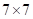
The Learnable
Spatial Mask (LSM) also relies on the concatenated visible-light and infrared
inputs, but instead of calculating channel averages or maxima, it directly
extracts spatial responses through a convolutional layer and then applies a
sigmoid function to obtain per-pixel weights.
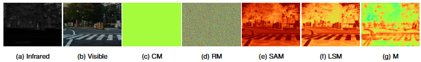
Figure 6:
Visual analysis of the frequency-domain saliency mask and the fusion process in
Scene #01574D
Table 6: Results from three independent
experiments using five masking strategies on the MSRS dataset (mean ±standard
deviation)
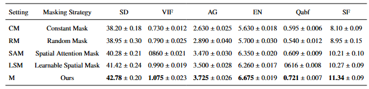
The visualization
results in Figure 6 show that the constant mask assigns the same weight to all
locations, while the random mask lacks distinct regional structure. The spatial
attention mask and the learnable spatial mask produce spatial variations; in
contrast, our frequency-domain saliency mask exhibits clearer regional
differences and can provide guidance for the dual-path fusion of DFFM based on
local frequency responses.
Table 6 reports
the mean values and standard deviations for the five strategies across three
independent experiments on the MSRS dataset. Our method achieved the highest
average values across all six metrics: SD, VIF, AG, EN, Qabf,
and SF. Based on a comprehensive analysis of both qualitative and quantitative
results, our frequency-domain saliency mask achieved superior fusion
performance under the experimental conditions described here.
(2)
Sensitivity Analysis of High-Frequency
Threshold 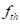
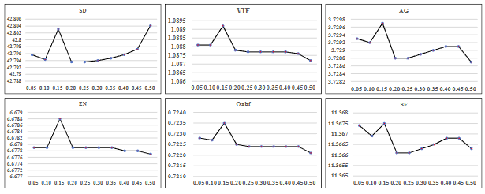
Figure 7:
Quantitative curves of six fusion evaluation metrics under different
high-frequency cutoff thresholds.
Figure 7 shows the
effect of different high-frequency cutoff thresholds on fusion
performance. It can be seen that within the range of 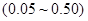 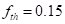 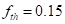
We
have added, as detailed in page 28 and 29\ EXPERIMENTS.
Comment 5.4:
4. The
protocol for the M3FD object-detection experiment requires clarification. The manuscript
states only that YOLOv5 is evaluated on 288 randomly selected scenes, without
specifying whether the detector is trained on infrared images, visible images,
one type of fused image, or a separate fused training set for each method. The
random seed and separation between training and test data are also missing.
Table 4 reports class-wise AP values but describes them as mAP and
omits the overall six-class mAP@0.5 and mAP@0.5:0.95. A unified and
reproducible detector-training protocol, single-modality 14 baselines,
aggregate metrics, and repeated-run results should be provided. If possible,
asemantic-segmentation experiment on MFNet would
further demonstrate the general value of the fused images for high-level vision
tasks.
Response5.4:
Thank
you for your valuable feedback on our manuscript. In the object detection
evaluation, we fed the fused images generated by each method into YOLOv5 and
used its official pre-trained model for testing; we did not retrain the
detector. For testing, we placed the M3FD images and their corresponding label
files into the directory specified by the YOLOv5 testing program and ran the
program to perform the evaluation. Therefore, this experiment does not involve
the splitting of the detector training set or the training process. The test
set contains 288 scenes. The detector and its weights can be obtained via this
link: https://github.com/ultralytics/yolov5. The
test scenes can be obtained via this link: https://drive.google.com/file/d/15751uLsGuCSUXeV5_lz7ywMymBb63Tfy/view?usp=sharing.
YOLOv5 can
calculate metrics such as AP@0.5, AP@0.7, AP@0.9, and mAP@[0.5:0.95]. This paper uses AP@0.5 and mAP@[0.5:0.95] to evaluate detection performance; higher values
indicate better performance. Specifically, AP@0.5 represents the average
precision for a given class when the IoU threshold is
0.5; mAP@[0.5:0.95] is the
average of the AP values for each class, calculated when the IoU threshold ranges from 0.50 to 0.95 in 0.05 increments.
In addition, we
have included the detection results obtained by feeding infrared and
visible-light images into YOLOv5, as shown below:
Table 7.
Comparison of Object Detection Performance Between Infrared and Visible Light
Monomodal Images on the M3FD Dataset
|
|
AP@0.5 |
|
mAP@[0.5:0.95] |
||||||||||
|
|
Person |
Car |
Motorcycle |
Bus |
Truck |
Traffic
light |
|
Person |
Car |
Motorcycle |
Bus |
Truck |
Traffic
light |
|
Visible |
0.3798 |
0.6977 |
0.2331 |
0.6231 |
0.2244 |
0.3271 |
|
0.2573 |
0.5611 |
0.1381 |
0.541 |
0.1996 |
0.1917 |
|
Infrared |
0.477 |
0.536 |
0.1528 |
0.3719 |
0.0966 |
0.0787 |
|
0.3592 |
0.3831 |
0.0846 |
0.2549 |
0.0755 |
0.038 |
|
Ours |
0.5143 |
0.7286 |
0.2688 |
0.559 |
0.1713 |
0.3195 |
|
0.3761 |
0.5803 |
0.1646 |
0.5075 |
0.1585 |
0.1935 |
The overall
metrics in Table7 show that our method outperforms the infrared and visible
light single-modality baselines in the M3FD object detection task. This
indicates that fused images can integrate complementary information from both
modalities, providing the detector with more comprehensive feature cues.
We
have added, as detailed in page 24 and 25\ EXPERIMENTS.
Comment 5.5:
5. The manuscript
requires a comprehensive consistency and language check. FAMM/FAEM, DFFM/DFMM,
and FSMM/FASM are used inconsistently; the full model is called A8 in the text
but A10 in Table 5; the SF value of A2 differs between the text and the table;
and Fig. 12 claims ten threshold settings but displays only eight. RFNest, ICAFusion, and DenseFuse are mentioned in the discussion but are absent
from the corresponding tables. In addition, Reference [20] describes a
waterbody-segmentation SDNet rather than the fusion
method cited in the text, Reference [43] is unrelated to the SD image metric,
and the title page still states “Preprint submitted to Nuclear Physics B.” The
equations, figures, tables, method names, citations, journal template, and
English writing should therefore be thoroughly revised
Response5.5:
We were really
sorry for our careless mistakes. Thank you for your reminder. We have carefully
reviewed and revised the entire text item by item, standardizing the use of
FAMM, FSMM, and DFFM; unified the complete model number as A10; and verified
and corrected the SF values for A2. We have also verified the number of
thresholds and related descriptions in Figure 12 to ensure consistency among
the figure, the main text, and the figure captions; at the same time, we have
adjusted content in the main text that did not match the actual experimental
results and corrected references [20] and [43] to align with the citations in
the main text. Furthermore, we removed the residual text “Preprint submitted to
Nuclear Physics B” from the title page and reviewed and revised the equations,
figures, method names, literature citations, and English phrasing.